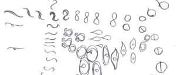
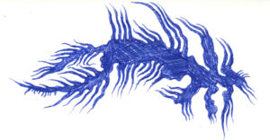
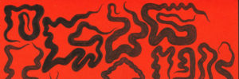
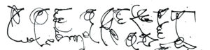

{#25} La newsletter che verrà

«Vedi caro amico cosa si deve inventare
Per poter riderci sopra»Lucio Dalla, L’anno che verrà
Stai leggendo la newsletter sporadica di eXtemporanea, una comunità ibrida che discute dello scientifico nella società, del sociale nelle scienze, e di tant’altro. Se non ricordi come ci hai conosciuto, forse il nostro sito scienceground.it può aiutarti a recuperare le tracce. Qui trovi i precedenti numeri.
Care amiche, vi scriviamo:
l’anno vecchio non smette mai di finire, ma noi già abbiamo delle grosse novità!
Come comunità abbiamo a lungo parlato di parlare di linguaggio: eppure lo parliamo “naturalmente”! Anche voi vi sentite bombardate dagli interventi perentori su quali sono i giusti termini da usare? E come noi siete insofferenti ai toni esagerati — ma neppure vi accontentate di rimanere neutrali? È giunto il momento di capire di cosa stiamo parlando: per questo vi invitiamo a una libera lettura condivisa.
Coordinate più precise qui sotto, nella nuova rubrica Cosa bolle in pentola, in cui d’ora in poi cercheremo di aggiornarvi sulle tante attività pubbliche che organizziamo, a cui partecipiamo, o che ci sembrano interessanti.
A fianco dei tradizionali Consigli di lettura, la newsletter-che-verrà sarà arricchita da qualche breve rubrica. Oggi Dal rusco linguacciuto recupereremo proposte di traduzione di parole straniere nuove, difficili, o inusuali: partiamo con drosscape. In Old but goldies recuperiamo qualche vecchio percoso, alla luce dell’inquietante attualità.
Per la prima volta poi vi facciamo anche sentire una delle nostre voci:
Speriamo un giorno di sentire anche le vostre: l’anno che sta arrivando tra un anno passerà, ed è meglio parlarne invece di nutrire silenziosi pensieri sospettosi. Noi ci stiamo preparando, e questa è la novità!
Avete suggerimenti? Scriveteci a extemporanea@tuta.io
(Illustrazioni di Alberto Motolese)

Cosa bolle in pentola
- Linguistica per tutte. Cos’è ‘sto benedetto linguaggio? Lo sappiamo usare, d’accordo, a volte anche molto bene… Ma oltre le norme che ci hanno inculcato a scuola, come funziona? Ci addentriamo in un fitto dibattito con Edward Sapir & Benjamin Lee Whorf e con Andrea Moro, in due o più appuntamenti online. Qui ulteriori dettagli e istruzioni per partecipare.
- Epistemologie — Indagine, critica e costruzione di senso nel campo tecnico e scientifico. Parteciperemo a un interessante corso presso la libreria Punto Input di Bologna, in particolare animando la terza lezione su turchi meccanici e intelligenze artefatte. Tutte le informazioni e i dettagli per l’iscrizione li trovate sull’evento Facebook e scrivendo alla libreria (formazione.input@gmail.com). Per un po’ di informazioni aggiuntive vi linkiamo la locandina e gli abstract del corso. Un’ottima occasione per approfondire tanti temi che ci stanno a cuore: «frammentare e toccare con mano il significante “scienza”, per studiare le tensioni e le varie storicità che lo compongono».
- Microplastiche: a neverending story. Nelle due scorse edizioni di Scienceground abbiamo ragionato con voi sulle implicazioni e le modalità di comunicazione del problema delle microplastche in acqua, presentando un protocollo di ricerca (in collaborazione con Globe Italia e Deakin University). Purtroppo non è ancora tempo per smettere di parlarne: la Commissione Europea ha lanciato una consultazione pubblica su bioplastiche e plastiche biodegradabili/compostabili. Parteciperemo con nuove riflessioni: vi aggiorniamo nella prossima newsletter!
- Eduardo Yalán Dongo (Universidad de Lima, Universidad Peruana de Ciencias Aplicadas), Introduzione alla semiotica del consumo: seminario di ecosofia di ubi minor, 3 marzo h 15, aula 3 di via Zamboni 38, Bologna (online: teams, scrivere a ubiminor.seminari@gmail.com)
- Come vivremo? (Ammesso e non concesso che vivremo), incontro con Franco “Bifo” Berardi, Lunedì 28 h 21, Alchemilla Via Santo Stefano 43, Bologna

Old but gold
Venti di guerra. La situazione geopolitica europea e mondiale ci riporta alla mente (ahinoi) alcuni ragionamnenti che avevamo fatto su Scienza, guerra, società. Se cercate anche voi qualche spunto salvifico, qui trovate le registrazioni agli eventi che nel 2020 organizzammo al Palazzo Ducale di Genova, con la collaborazione dell’Università di Genova e di colleghi e colleghe che con noi si preoccupavano dei risvolti bellici delle proprie attività di ricerca. Se preferite la lettura ai podcast, ecco una piccola bibliografia di supporto.

Dal rusco linguacciuto: drosscape
Paesaggio relitto: «Mi è arrivata una suggestione da Baudelaire e dai suoi relitti (“les épaves”), che sono scarti ma non assumono la connotazione negativa di scarto, anzi, sono potenzialmente portatori di un rinnovamento». Continua…

Consigli di lettura/ascolto
- Elia Faso, Da Luca Rastello c’è ancora da imparare…, Gli Asini Rivista
- Paul Kingsnorth, Savage Gods, Two Dollar Radio, 2019. In questo podcast un’intervista all’autore sui temi del libro.
- Antoniette Rouvroy e Bernard Stiegler, Il regime di verità digitale. Dalla governamentalità algoritmica a un nuovo Stato di diritto, La Deuleziana N . 3 / 2016 – La vita e il numero
- AAVV, Un decalogo per interpretare correttamente la mortalità da Covid-19, Scienza in Rete: «L’ultimo punto di questo decalogo rappresenta una sfida per il futuro. Ovvero un’esortazione a occuparsi non più solo dei morti per Covid-19, ma anche degli effetti indiretti della pandemia.»
- David Robertson and Peter Doshi, The end of the pandemic will not be televised, BMJ 2021; 375
- Robert Musil, Sulla stupidità, conferenza del 1937 per la Lega austriaca del lavoro.